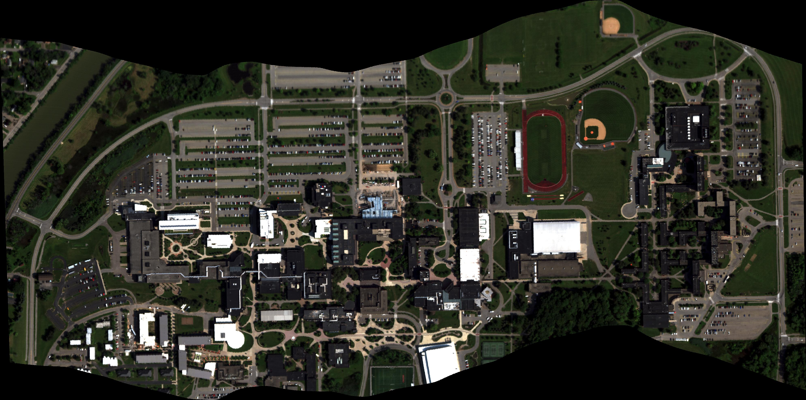

Projects & Data
Semi-Supervised Hyperspectral Object Detection Challenge
Semi-supervised learning has developed into a highly researched problem as it minimizes labeling costs while achieving performance comparable to fully labeled datasets. As part of the Perception Beyond the Visible Spectrum workshop at CVPR 2022, we organized a semi-supervised learning challenge with 10% labeled data across three moving object categories: vehicles, bus, and bike.
The dataset (RooftopAI) is a hyperspectral vehicle detection dataset collected from the roof of the Chester F. Carlson building at RIT. The bounding boxes were labelled by Aneesh Rangnekar. A paper describing the sensor can be found here, and the challenge results paper here.
Thanks to the Air Force Office of Scientific Research for supporting this work through the DDDAS program.
AeroRIT
AeroRIT is a semantic segmentation dataset collected with a hyperspectral sensor over the Rochester Institute of Technology campus. The scene was captured from a Headwall Photonics Micro Hyperspec E-Series CMOS sensor at an altitude of approximately 5,000 feet (0.4m GSD). Semantic map pixels were labelled by Aneesh Rangnekar using individual hyperspectral signatures and geo-registered RGB images as references.

If using results from this study, please cite: Rangnekar, A., Mokashi, N., Ientilucci, E. J., Kanan, C., & Hoffman, M. J. (2020). AeroRIT: A New Scene for Hyperspectral Image Analysis. IEEE Transactions on Geoscience and Remote Sensing, 58(11), 8116–8124. doi:10.1109/TGRS.2020.2987199
Thanks to the Air Force Office of Scientific Research for supporting this work through the DDDAS program.
Simulating Fate and Transport of Plastic Pollution
Most of my work here has been on freshwater systems, particularly the Laurentian Great Lakes. Using currents from NOAA's operational forecast models, we simulated the input and transport of plastic pollution through the Great Lakes. This was the first attempt at a full-system budget and the first estimates of both input and floating mass of plastic.
Our initial work focused on surface currents; in recent years we've extended to transport in the water column and deposition on the lake bottom. In 2020, along with Ph.D. student Juliette Daily, we published the first full water-column and deposition mass estimates in the Great Lakes or any body of water. We are currently modeling biofouling and beaching/deposition in collaboration with Christy Tyler, Nathan Eddingsaas, Andre Hudson, and Steven Day. Supported by NOAA/NY SeaGrant.
Simulated plastic particles entering and moving through Lake Erie (2009):
Notice how particles accumulate along the US shore driven by prevailing currents. Strong wind events disrupt gyre-based clustering, preventing the "garbage patches" seen in the open ocean.
Simulated plastic particles entering and moving through Lake Michigan (2009):
If using results from this study, please cite: M.J. Hoffman and E. Hittinger. 2016. Inventory and transport of plastic debris in the Laurentian Great Lakes. Marine Pollution Bulletin.
Simulated Hyperspectral Aerial Video Dataset
DIRSIG simulated aerial video from a moving platform with moving vehicles. Hyperspectral frames can be downloaded along with ground truth files for the vehicles. More information on the dataset and our work with it can be found here.
If using this data, please cite: Uzkent, B., M.J. Hoffman, and A. Vodacek. 2016. Real-time Vehicle Tracking in Aerial Video using Hyperspectral Features. CVPR Workshop: Moving Cameras Meet Video Surveillance, June 2016.
Video of the scene:
Thanks to the Air Force Office of Scientific Research for supporting this work through the DDDAS program under grant FA9550-15-1-0093.